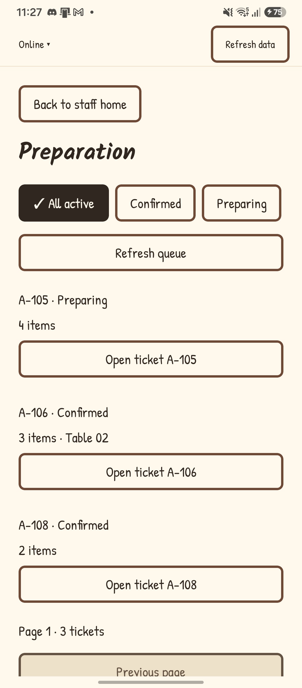
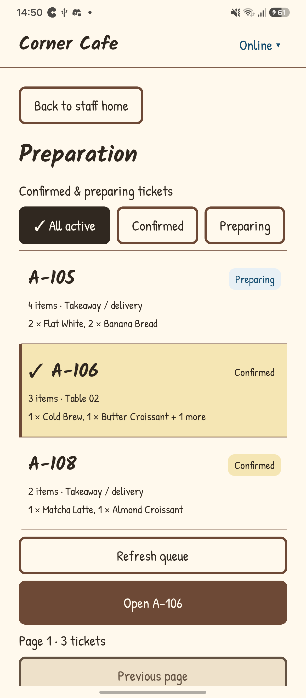
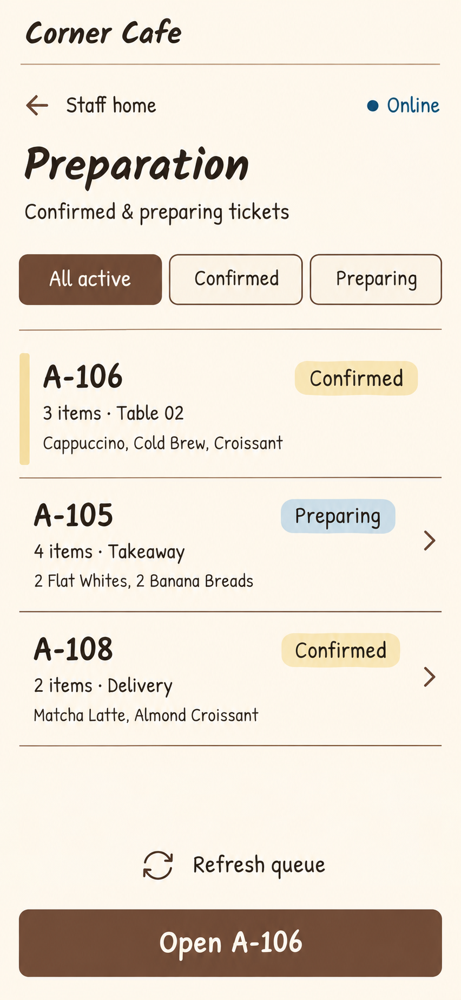

a5a4f0d
5876e57

931f7ca
Native content is measured at 390×844dp. The PNGs are unmodified; this viewer clips the measured 29dp status bar and 15dp navigation bar using CSS. Images retain their aspect ratios. The generated concept is approximately 390×845dp at this display width; it is a design reference, not a running application.
a5a4f0d
5876e57

931f7ca
See
capture provenance, measured targets and deliberate differences,
original reference SHA-256 hashes,
recorded detail SHA-256 hashes
and
original independent cancellation state checks.
Responsive confirmation checks at fea0541
include a fresh measured 390×844dp detail capture on
fea0541.